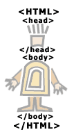

Учебник по Html для чайников. Инструментарий.Ступенька 1-ая.Порядок прежде всего, поэтому перед началом работы мы создадим на нашем компьютере отдельную папку для будущей страницы. D:\первые шаги\ У себя на компьютере я создала такую папку на диске D, и назвала ее Первые Шаги. Вы, естественно, можете создать вашу папку, где угодно, и назвать ее, как угодно. Теперь откроем блокнот – notepad (start – programs – accessories – notepad или пуск – программы – стандартные – блокнот) и скопируем туда следующий текст:  <html> <head> <title>Мой первый шаг </title> </head> <body> Здравствуйте, это моя первая страница. <br> Добро пожаловать! :) </body> </html> (посмотреть) Сохраним этот документ, присвоив ему имя *.html D:\первые шаги\index.html Многие читатели спотыкаются на фразе: "А теперь сохраним этот документ, присвоив ему имя *.html", они пишут письма, о том, что у них получается сохранить, только как текстовой документ *.txt, а вот как *.html - никак. Чтобы в дальнейшем избежать этого глупого недоразумения, я и пишу это примечание. Если вы сохраняете документ, через Файл -> Сохранить (File -> Save), то, естественно, что он сохраняется как *.txt. Надо сохранять ваш документ следующим образом: - Файл -> Сохранить Как (File -> Save as) - Дальше вводите имя своего документа, например: index.html (а не просто index; приписочка *.html должна быть обязательно). - Если вы уже сохранили ваш документ, как *.html, то при внесении изменений в этот документ вы можете уже сохранять их через Файл -> Сохранить (File -> Save). Вот и все. Надеюсь, теперь у всех все будет в порядке. Теперь откроем броузер, допустим, Internet Explorer (не закрывайте блокнот, он нам еще пригодится), и откроем в броузере наш документ. Файл - Открыть - кнопка Обзор - Наш документ (index.html) File – Open – Browse – index.html Если мы чего-то изменим в нашем *.html документе (в блокноте), то, чтобы посмотреть, как это выглядит в нашем броузере, надо не забывать нажимать в броузере кнопку ОБНОВИТЬ. Если изменений не видно, то это значит, что вы где-то что-то неправильно написали, или забыли сохранить документ. Посмотрим теперь, что у нас получилось, и разберемся, как оно так получилось :) |
|||||